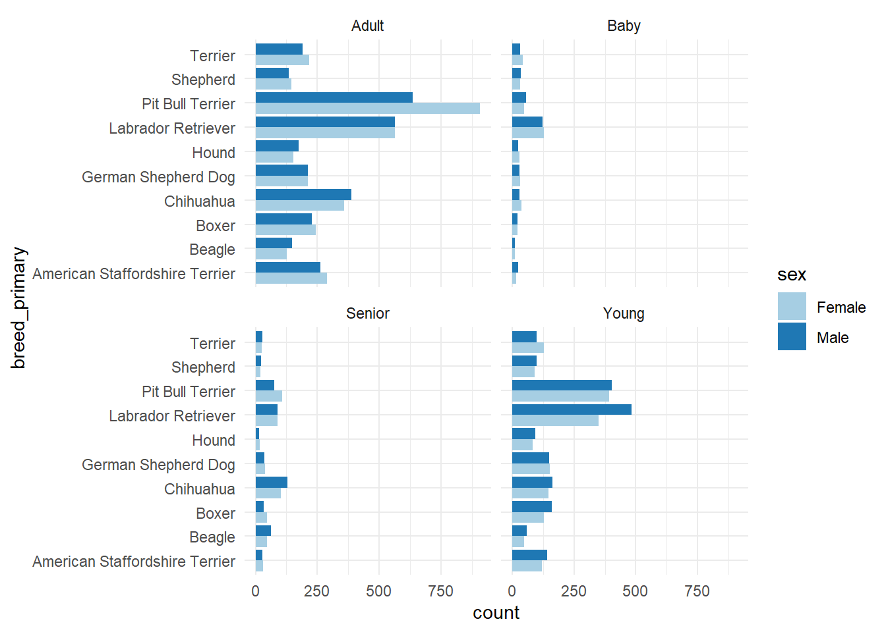
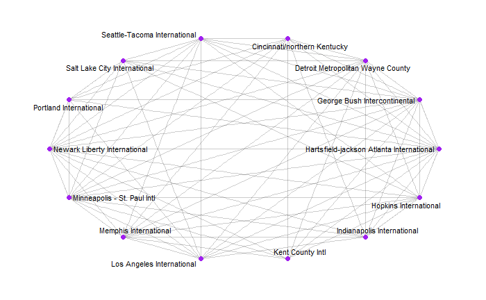
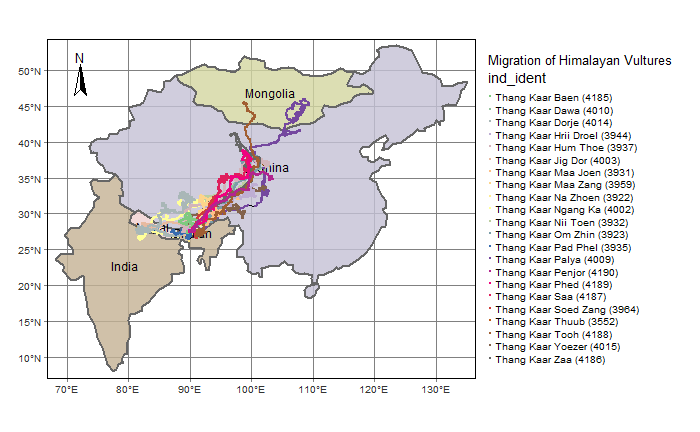

This is a small collection of my best works from this course.
I am a cleanliness freak, so one thing you might notice about this page and its graphs is that it is ordered neatly. (is that something to flex though? XD)
The dog_data was a csv data set that I downloaded from a research website online called ‘Our World in Data’. The data set had so many columns but I filtered out only the ones that were relevant to the graph that I wanted to plot.
Some attributes that I found interesting were the env_cats, env_children and env_dogs columns, which was a Boolean type attribute which tell us whether a dog was friendly with cats, children or dogs. Unfortunately I had to discard them as they were irrelevant in my graph. XD
# Reading the csv file and selecting only the attributes that were relevant to my graph
dog_data <- read.csv(file = "data/allDogDescriptions.csv")
# The below was a more case specific filtration which I did based on the top most frequently occurring breeds in the data set, and only filtered out the house trained dogs.
new_dog_data <- dog_data %>% select(breed_primary, age, sex, house_trained) %>%
filter(breed_primary %in%
c("Pit Bull Terrier", "Labrador Retriever", "Chihuahua",
"Terrier", "Hound", "German Shepherd Dog", "Boxer",
"Shepherd", "American Staffordshire Terrier", "Beagle"),
house_trained == TRUE) %>%
arrange(breed_primary, age, sex) %>%
group_by(breed_primary, age, sex) %>%
summarise(count = n())
new_dog_data %>% head() %>% kable()| breed_primary | age | sex | count |
|---|---|---|---|
| American Staffordshire Terrier | Adult | Female | 288 |
| American Staffordshire Terrier | Adult | Male | 263 |
| American Staffordshire Terrier | Baby | Female | 17 |
| American Staffordshire Terrier | Baby | Male | 24 |
| American Staffordshire Terrier | Senior | Female | 31 |
| American Staffordshire Terrier | Senior | Male | 28 |
Important attributes within the data set :-
Here with the given data, I wanted to graphically find out the ratio of house trained adoptable dogs between male and female dogs.
The chart I could think of using for this was a grouped bar graph, where I would display the ratio for the top 10 most recurring breeds within the given data set.
Also, to be able to make this chart, the given data set must be manipulated to make the relevant rows and columns.
ggplot(new_dog_data, aes(x = count,y = breed_primary, fill = sex)) +
geom_col(position = 'dodge') +
facet_wrap(~age) +
theme_minimal() +
scale_fill_brewer(palette = "Paired")
This was the final plot that I could make from the data given to me.
It was quite interesting to see the variations in the number of trained dogs for different breeds across different age groups.
The below data sets are csv files that contains a node table for the various airports all across America, and also an edge table that shows the routes taken by the various flights.
# Reading the airline nodes csv but using a different delimiter
air_nodes <- read_delim("data/AIRLINES-NODES.csv",delim = ";")
air_nodes %>% head() %>% kable()| Id | Label | Code | City | latitude | longitude | ToFly | Visits |
|---|---|---|---|---|---|---|---|
| 1 | Adams Field Airport | LIT | Little Rock, AR | 34729444 | -92224444 | 0 | 105 |
| 2 | Akron/canton Regional | CAK | Akron/Canton, OH | 40916111 | -81442222 | 0 | 123 |
| 3 | Albany International | ALB | Albany | 42733333 | -73800000 | 0 | 129 |
| 4 | Albemarle | CHO | Charlottesville | 38133333 | -78450000 | 1 | 114 |
| 5 | Albuquerque International | ABQ | Albuquerque | 35040278 | -106609167 | 0 | 105 |
| 6 | Alexandria International | AEX | Alexandria, LA | 31327500 | -92548611 | 0 | 93 |
Node Table Headers:-
# Reading the airline edges csv but using a different delimiter
air_edges <- read_delim("data/AIRLINES-EDGES.csv",delim = ";")
air_edges %>% head() %>% kable()| Source | Target | Type | Weight |
|---|---|---|---|
| 1 | 110 | Undirected | 10 |
| 2 | 37 | Undirected | 10 |
| 2 | 62 | Undirected | 10 |
| 3 | 153 | Undirected | 10 |
| 4 | 105 | Undirected | 10 |
| 5 | 133 | Undirected | 10 |
Edge Table Headers:-
# Using the 'tidygraph' package, we can merge the given node and edge data sets and create a new single object called a 'network graph object'.
air_graph_obj <- tbl_graph(nodes = air_nodes,
edges = air_edges,
directed = FALSE)
# Using the graph object I add the same 'centrality_degree' function to control the degree and filter the number of airports in the graph object.
air_centrality <- air_graph_obj %>%
activate(nodes) %>%
mutate(degree = centrality_degree(mode = c("in"))) %>%
# According to my understanding of this function, only the nodes with a higher relative degree than given are passed through the function and saved into the network graph object
filter(degree > 25) %>%
activate(edges) %>%
mutate(betweenness = centrality_edge_betweenness())
air_centrality %>% activate(nodes) %>% as_tibble() %>% kable()The network I wanted to plot aimed for the following:-
ggraph(air_centrality, layout = "linear", circular = TRUE) +
geom_edge_link(alpha = 0.2) +
geom_node_point(size = 2, colour = "purple") +
geom_node_text(aes(label = Label),repel = TRUE,
size = 3,
max.overlaps = 20) +
theme_graph()
This graph represents the interconnections between the 14 most frequently visited airports in America.
We can see how almost all the airports have some flight traveling between them.
The data I extracted below are of 3 levels and serve different purposes :-
data("World")
migration_countries <- World %>% filter(iso_a3 %in% c("IND", "CHN", "MNG", "NPL", "BTN"))
vulture_points <- st_read("data/Himalayan_Vultures/points.shp")
vulture_lines <- st_read("data/Himalayan_Vultures/lines.shp")The graph I am going to plot involves a visual representation of the migration path taken by the Himalayan Vultures.
The graph is supposed to show the different routes taken by the various identities of the Himalayan Vulture.
vulture_migration <-
tm_shape(migration_countries) +
tm_graticules() +
tm_polygons(alpha = 0.8, col = "name", lwd = 2, legend.show = FALSE) +
tm_text("name", size = 3/4) +
tm_compass(type = "arrow", position = c("left", "top")) +
tm_shape(vulture_lines) +
tm_lines() +
tm_shape(vulture_points) +
tm_dots(col = "ind_ident", palette = "Accent") +
tm_layout(legend.outside = TRUE,
legend.outside.position = "right",
title= 'Migration of Himalayan Vultures')
vulture_migration
Digital Making was an unexpectedly fun workshop. I absolutely loved learning how to code in R. I took away a lot from this journey and the learning did not come easy. A few lessons I can recollect ‘R’ :-
To come to the end of this workshop is a bittersweet feeling. Classes were tiring fun and interactive and perfectly paced to suit the majority’s standards. I learnt a certain work ethic which was the most valuable lesson of them all, and something that I will consciously make an effort to maintain through my journey at Srishti.
Bravo six, ’R’ya going dark <3